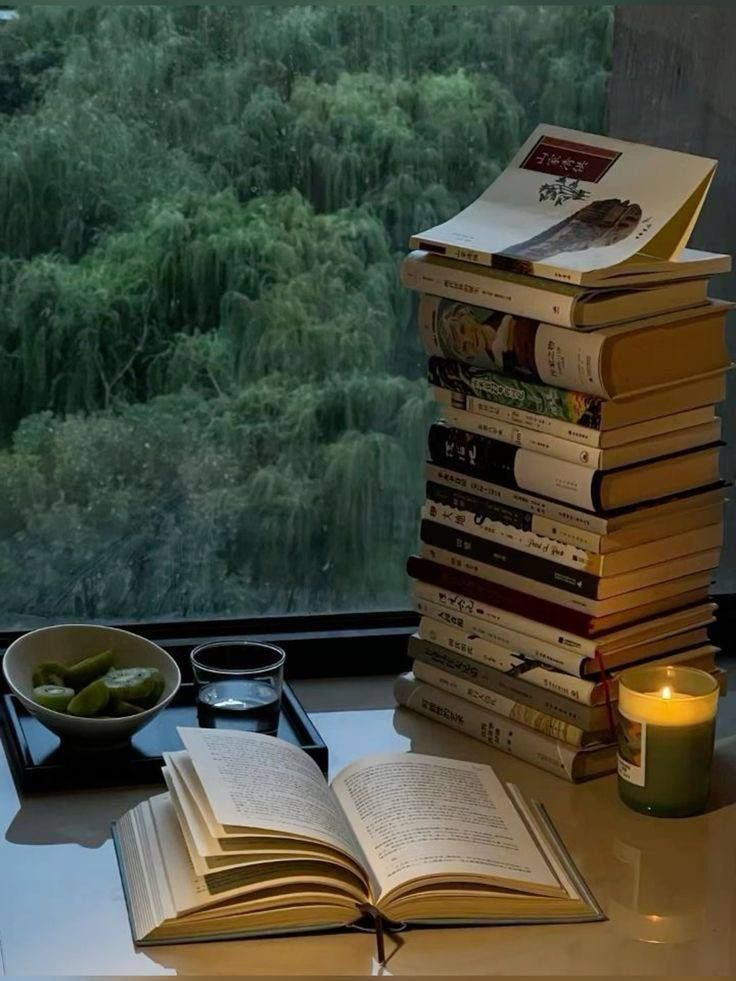
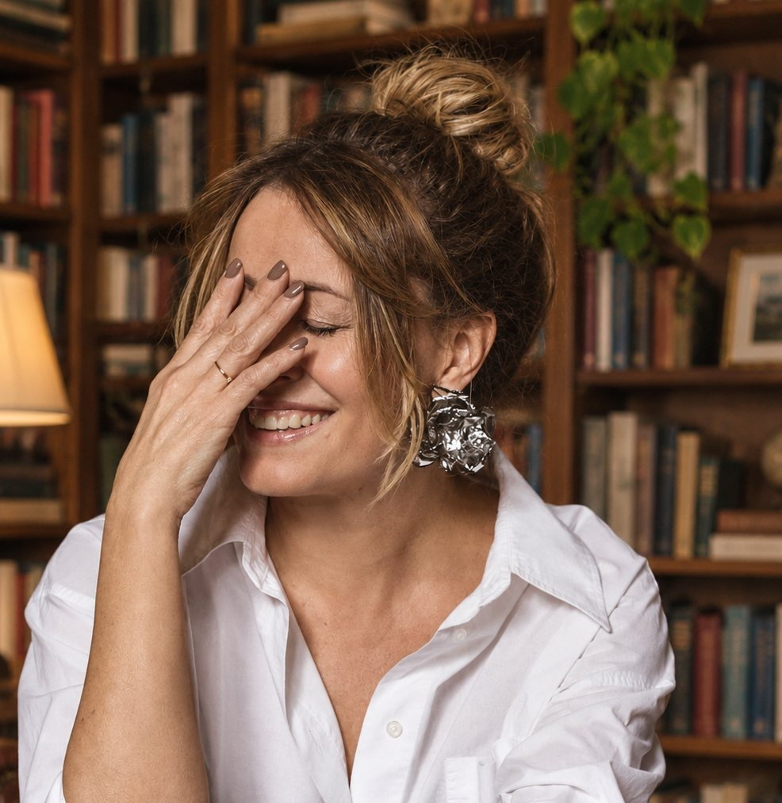
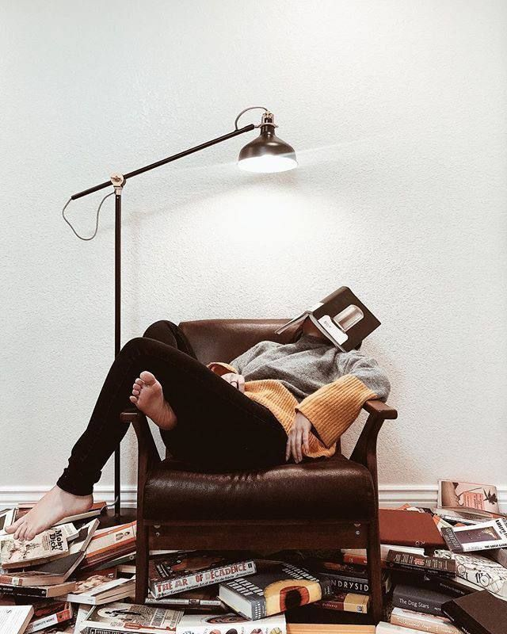
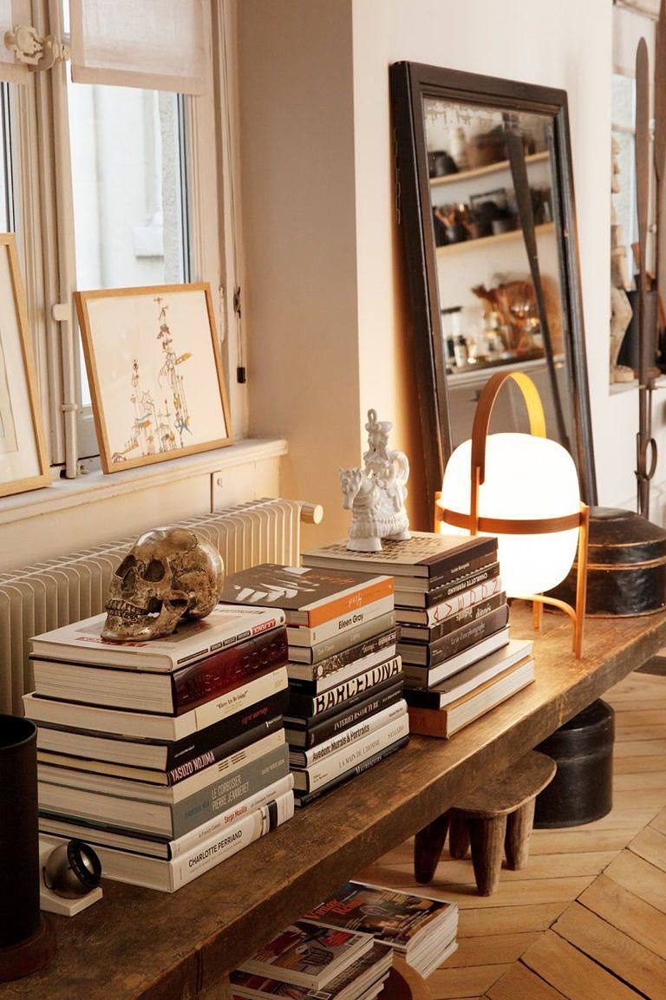

Просто останні кілька років це дивно виглядає: книжки я купую регулярно, а читаю значно рідше.
На тумбочці біля ліжка лежать три. Ще дві їздять зі мною у валізі. Одну я починала двічі — і вже купила наступну.
У моєму домі прекрасна бібліотека намірів і зовсім небагато дочитаних книжок.
Ті самі, що їздять у валізі
Якщо вам зараз трохи смішно й трохи незручно — схоже, ви теж із наших.
2 / 9

Ми не розлюбили книжки
Просто тепер між нами й книжкою весь час хтось стає.
Телефон. Робота. Новини. Діти.
Серіал. Повідомлення. Втома.
Ще одне «дуже важливе відео».
І одного дня я подумала: може, мені потрібні не просто ритм і маршрут, а ще й хороша компанія? Таких самих людей — закоханих у книжки і трохи «ждунів».
Так і народилися ЧИТУНИ.
3 / 9
Одна книжка. І цього разу — до кінця
Щомісяця я обираю одну хорошу книжку. Ви купуєте її або дістаєте з полиці — і починаємо разом. На першій зустрічі я читаю вам уголос початок, десь двадцять–тридцять сторінок, щоб ми разом увійшли в історію.
Потім я зупиняюся й кажу: «Добре, тепер читаємо самі. Цієї пʼятниці зустрічаємося на сторінці 73».
пʼятниця73
вівторок128
пʼятниця196
вівторок251
Не треба думати, як подужати 360 сторінок. Є просто наступна зупинка.
4 / 9
У цьому, власне, весь фокус
Книжку все одно читаєте ви. Я не перетворюю її на аудіокнижку й не читаю замість вас.
Я читаю разом з вами, слідкую за маршрутом і тримаю ритм.
У визначений день збираємося на домовленій сторінці: говоримо про сюжет, героїв і власні успіхи. Я відкриваю книжку там, де всі зупинилися, читаю далі — і називаю нову сторінку.

5 / 9
І цим маршрутом іде компанія
Між зустрічами кожен читає у своєму житті: в ліжку, у потязі, в метро, в кавʼярні, поки дитина на тренуванні або поки знайшлися ті самі двадцять хвилин тиші.
У різних містах, квартирах і країнах люди живуть абсолютно різне життя — і водночас читають одну історію.
«Я вже на місці. Ви ще далеко?»
«Я на 48-й, не чекайте».
А хтось дочитав за три дні й тепер сидить тихо, як людина, яка знає майбутнє.
6 / 9
А потім настає найприємніше
Одного дня ми перегортаємо останню сторінку. І книжка переходить із великої домашньої категорії «треба якось повернутися» до значно приємнішої — «Дочитано».
Після цього збираємося в Zoom і говоримо вже про всю книжку. Іноді запрошуємо автора, перекладача чи редактора. А іноді просто говоримо своєю компанією: триста сторінок, прожитих разом, — уже достатній привід зустрітися.
І одразу починається наступний місяць
7 / 9
А якщо я відстану?
Відстанете. Так буває.

Буває і так
Книжка почекає, ми теж. Можна наздогнати через два дні. Можна через тиждень. Тут ніхто не веде журнал і не забирає книжку за погану поведінку.
Нам потрібен ритм, який допомагає читати, а не ще одна сфера життя, де треба почуватися винними.
А якщо книжка зовсім не зайшла — навіть дуже хороші книжки іноді просто не наші. Читайте свою, але в цьому ж ритмі.
8 / 9

Для тих, хто досі любить читати
У кого книжок «на потім» уже більше, ніж хотілося б визнавати.
Хто сумує за станом, коли можна зникнути в історії на годину.
Кому легше рухатися, коли є конкретна точка попереду й люди поруч.
Одна книжка на місяць. Від першої сторінки до останньої. 395 грн / місяць.
Наступну книжку можна знову купити й відкласти. А можна прочитати з нами.